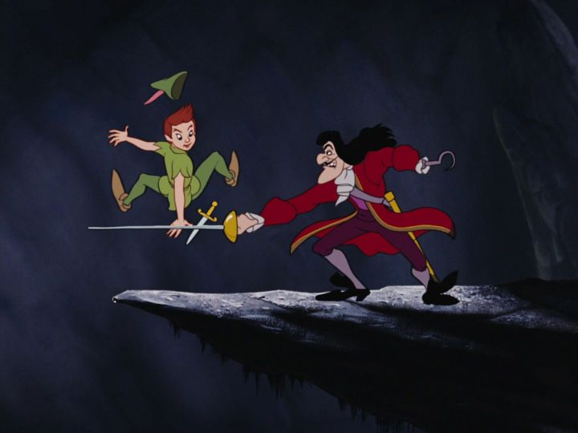

Disney's "Peter Pan," released in 1953, was the studio's most well-realized movie yet upon release. Based on the classic story by J.M Barrie, it was an adventure that encorporated action, comedy, romance, and more, along with what would remain as one of Disney's best villains. It would also be one of the last movies to have a major impact on all of Disney's future branding: to this day, Tinker Bell (along with "Pinocchio"'s Jiminy Cricket) is the company's unofficial mascot behind Mickey Mouse, frequently used in the amusement park and television appearances for Walt. In this version of the story, we start in upper-class London, England, looking in on the Darling family. The parents are preparing to go out to a formal party, the father (George Darling) in particular getting stressed out over getting dressed. Meanwhile, we're introduced to the children: eldest Wendy, middle-child John, and littlest Michael. The two boys are acting out the stories of Peter Pan, the boy who never grows up, and his adventures fighting pirates on the island of Neverland. Wendy, despite being more mature, is the one who tells the stories, often daydreaming that they are real (even telling their mother that she's keeping Peter's shadow in a box for safekeeping for when he returns, to her confusion). Geroge has had enough of the nonsense, announcing that Wendy would be moved to her own room when they return, to the childrens' horror (imagine such a punishment, to not be allowed to share a bedroom with your siblings, I say sarcastically). Sure enough, Peter Pan does visit, looking to get his shadow back. He offers to take the kids with him to Neverland to avoid having to grow up. They all fly off with a little pixie dust, and have a fun time on Neverland island. As they explore, the pirate Captain Hook continues to plan his revenge against Peter for cutting off his hand, and Tinker Bell quickly grows jealous of Wendy, exacting plans that strive to hurt her, or at least chase her away from Peter. All the while, despite Wendy being the most excited and knowledgeable of Peter's adventures and Neverland, feels frequently left out, and disturbed by the violent fun Peter and the Lost Boys have. She's the one that encourages everyone to head back home, having grown up a little all by herself. The Darling children are a bit of a weak spot for the movie. The boys, adventurous John and young Michael, don't contribute much of anything to the story. The story is clearly focused on Wendy and her development, but compared to past Disney heroines, she's a bit annoying, talking too much as a fan to Peter, or getting frustrated too quickly. To be fair, all of Neverland's inhabitants treat Wendy poorly, making it clear that this was a boy's paradise, not a girl's. Otherwise, the character are quite fun. Peter Pan, the lead, is honest and straight to the point, and sees everything as a game, never realizing the consequences of his actions or how they make others feel. He's a flawed, naive hero, but a hero that's easy to root for in a fight, and he makes winning conflicts seem effortless. His right-hand sidekick, the small Tinker Bell, is given more personality than you'd expect, being consious of her figure and clearly jealous when Peter gives too much attention to Wendy, and acting everything out efficiently without dialogue.  And that leads us to flamboyant Captain Hook, and his first mate, the sniveling Mr. Smee. Hook is more cartoonish than past Disney villains, enjoying long monologues and twisting his needle moustache, with a great vocal performance that make him watchable for hours. But he's still dangerous (in an early scene, he shoots a crew member for singing too loudly), and undoubtably is serious about killing Peter. By comparison, Mr. Smee makes for great comic relief, as Hook's bumbling but loyal right hand. And as part of the story where Hook origianlly lost his hand, they have to worry about the Crocodile, constantly hunting Hook, and his presence known by the sound of a ticking clock he ate. Unlike previous Disney movies, it feels like there's a genuine adventure here, led by Hook's scheming to end Peter once and for all. And there are some fun action scenes, with Peter and his knife dancing around a flailing Hook and his sword. The only major gripe I have with the classic story is the part heavily featured in other adaptations, but left out in Disney's version: the bit where Tinker Bell's light is about to go out, and everyone's belief in fairies brings her back. That's a good reason to watch other versions besides the Disney one, kids. It's also worth reminding viewers that Indians, or Native Americans, are featured in the story. It's certainly outdated, especially their referal as "In'juns," but I've seen this stereotypical portrayal repeated as recently as the 1990's. Here, it isn't ill-meaning, even if it could be offensive, so I'd be able to overlook it, but I understand if others can't. With such a colorful cast, there's a lot of fun character animation at work, especially with Hook. But otherwise the production feels a bit limited, and the attempts at ambitious scenes (like flying over London in the beginning) look dated today. While this is technically a musical, the songs aren't quite as memorable or involved as some prior DIsney movies, but the score in the background is fantastic is setting the tone when synced with dialogue. And the acting is excellent, with special mention to Peter's Bobby Driscoll (a child actor that featured in many of Disney's live-action roles; Peter Pan was his last major successful role before his career went south), and Hans Conried as both Captain Hook and the irritable George Darling. "Peter Pan" is one of those classics that holds up well as being a lot of fun, even though some other elements don't (Wendy's treatment for being a girl, the use of "In'juns" in the story, etc.). For its iconic imagery and themes, it's frequently a top-5 contender for best Disney animatied films, and deservedly so.
- "Ani" More reviews can be found at : https://2danicritic.github.io/ Previous review: review_Persona_4_-_The_Animation Next review: review_Ping_Pong_the_Animation